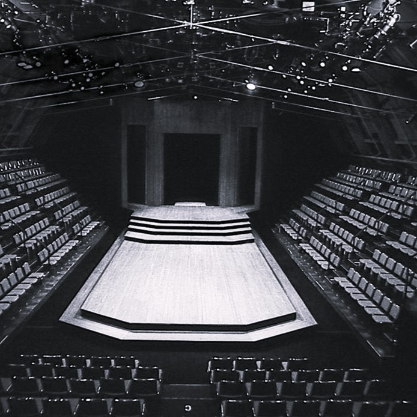
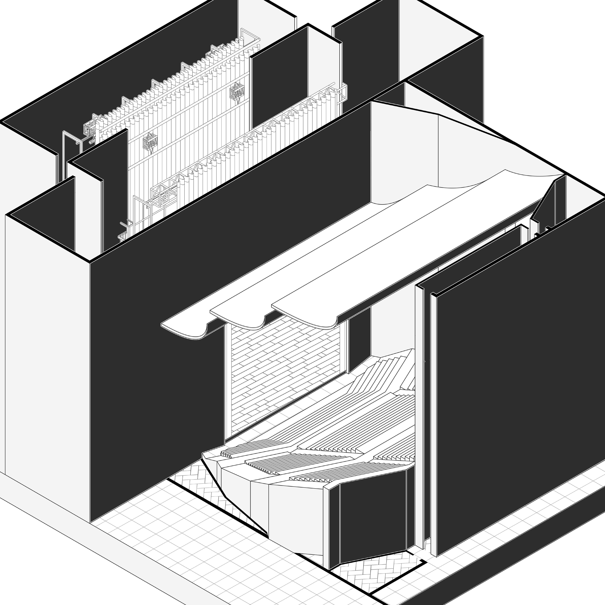
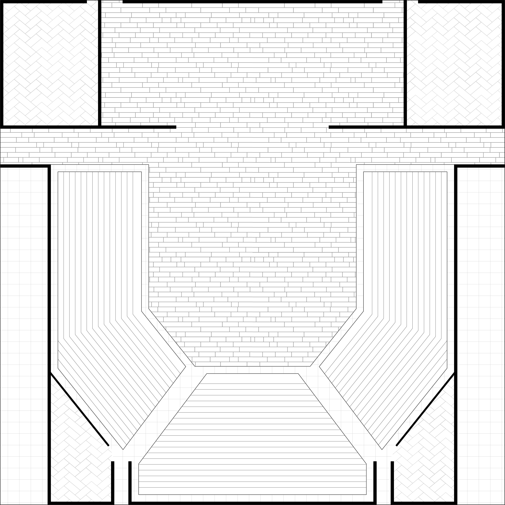
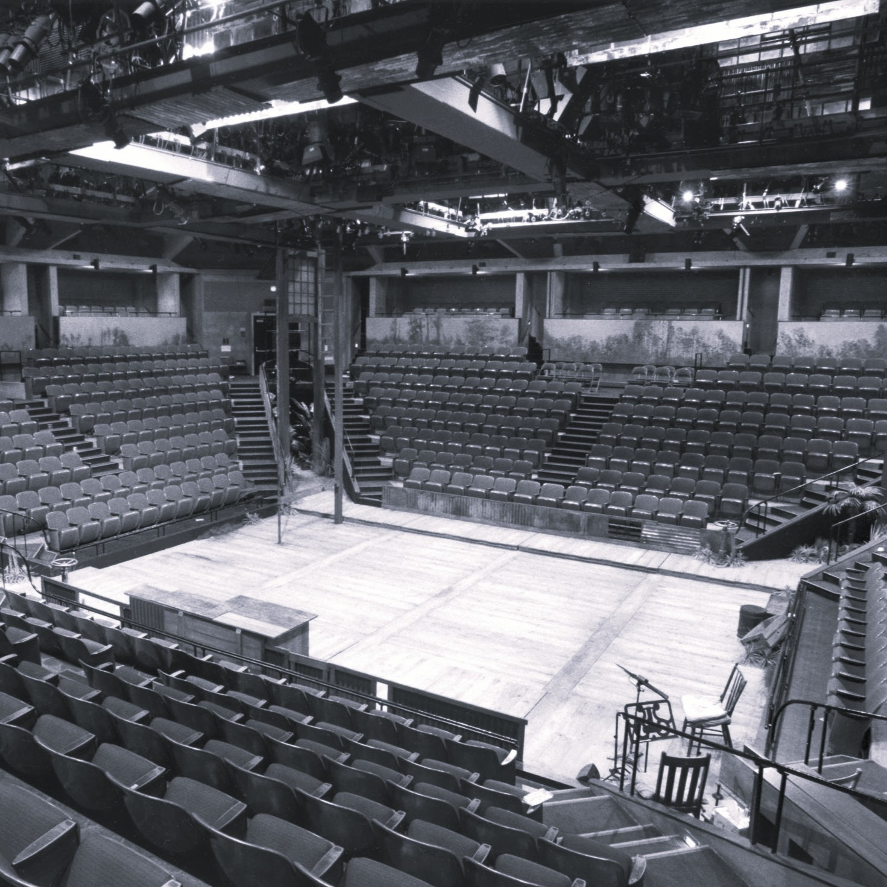
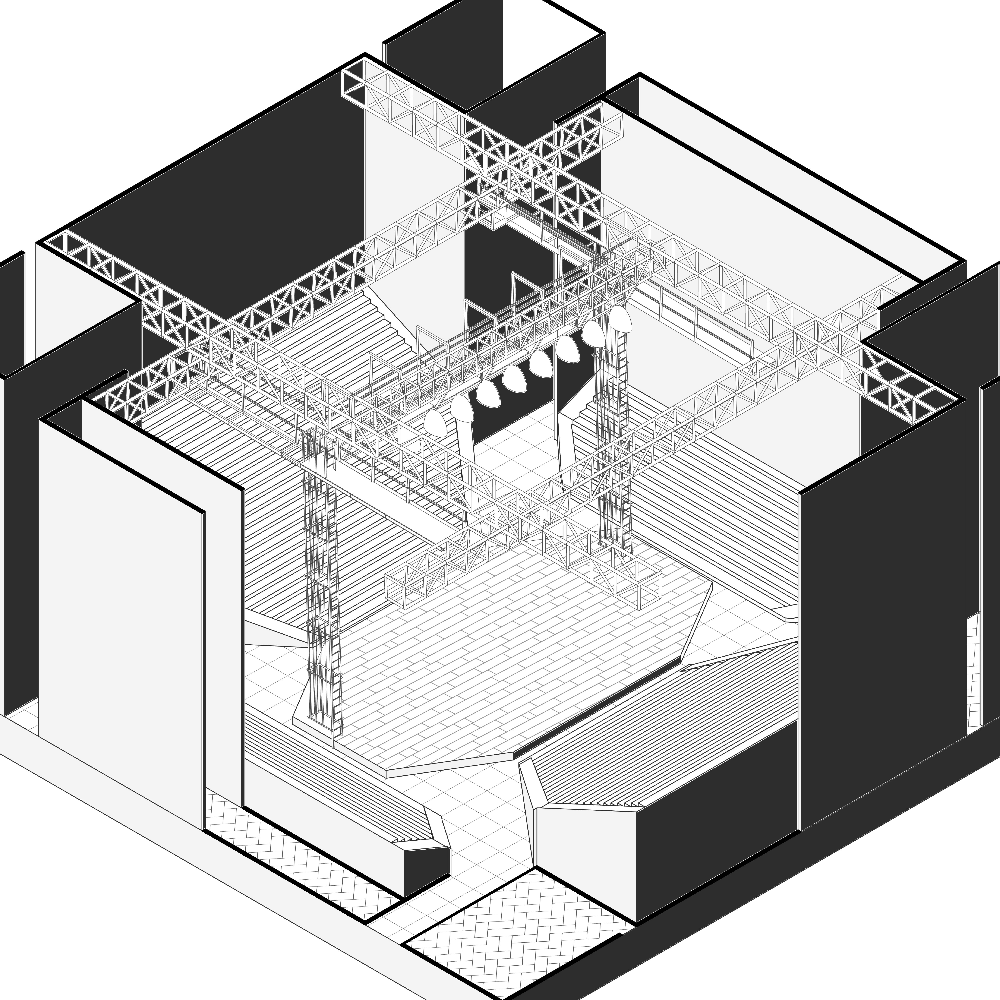
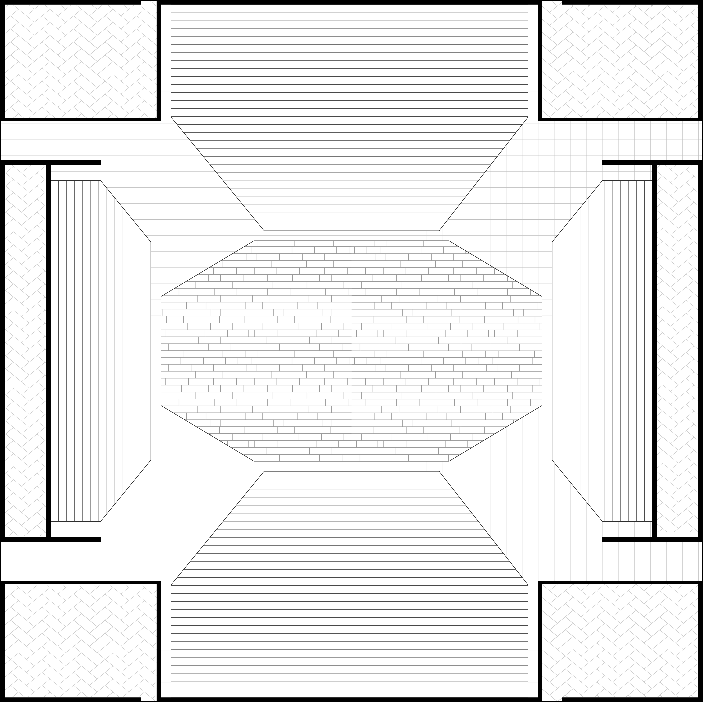

The stage is located at the front of the auditorium.
The audience faces the performance from one direction only.
Commonly used for plays, musicals, opera, and formal stage productions.



Type 2: Thrust Stage
The stage extends into the audience area.
Viewers sit on three sides, surrounding the performers.
Often used for drama, talk shows, opera, and live concerts.



Type 3: Arena Stage
The stage is placed at the center of the space.
The audience surrounds the performance on all four sides.
Suitable for concerts, circus shows, and large-scale events.